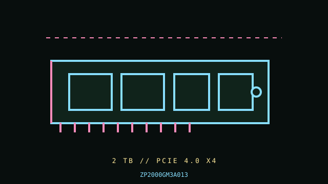

[ PCIE 4.0 NVME DRIVES // IDENTIFIED PRODUCT ]
Seagate FireCuda 530 2 TB (ZP2000GM3A013)
2 TB M.2 2280, bare module SKU; PCIe 4.0 NVMe SSD. Cataloged by the complete manufacturer part number below; performance figures are vendor-rated, not independent test results.

IDENTIFICATION: Verify the complete MPN, suffix, serial/date code, hardware revision and firmware against the product label. Capacity variants, factory heatsinks and regional SKUs may differ; the link and rated data below apply only to the specified configuration where the manufacturer identifies it.
Manufacturer-identified specifications
| Product / MPN | Seagate FireCuda 530 2 TB (ZP2000GM3A013) — ZP2000GM3A013 |
|---|---|
| Capacity / form factor | 2 TB; M.2 2280, bare module SKU. |
| Interface / lane width | PCIe 4.0 x4. |
| Protocol | NVMe 1.4. |
| Rated performance / endurance | Sequential up to 7,300 MB/s read and 6,900 MB/s write; 2,550 TBW endurance for the 2 TB SKU. |
| Model era | 2021 product generation; check manufacturer lifecycle/support notice. |
| Heatsink / revision | Bare drive SKU; distinct factory-heatsink model is sold separately. Do not assume the heatsinked SKU fits under a motherboard cover. |
Compatibility, installation & service
- Seagate FireCuda 530 has multiple capacities and a separate heatsink version; this product code identifies the bare 2 TB module. NVMe 1.4/PCIe 4.0 support and boot ability are host-dependent. Rated peak throughput requires a compatible PCIe 4.0 x4 host and suitable workload; thermal limits can reduce sustained results.
- Verify M.2 2280 M-key NVMe support, PCIe 4 x4 lane allocation, boot UEFI behavior, and M.2-cover compatibility from the host manual. Apply only the board thermal pad intended for bare drives; ensure there is airflow and monitor temperature under sustained writes. Save data before firmware updates, and use Seagate SeaTools/support references only for the exact model; keep SMART and firmware records for warranty/service.
- Do not hot-plug an M.2 module unless the server/platform manual explicitly documents hot-plug support. Shut down cleanly, disconnect standby power when instructed, and use electrostatic-discharge precautions during handling.
- Before replacing a boot drive, verify a recoverable backup, OS recovery media, encryption keys, firmware settings and the target system’s boot mode; physical fit does not establish compatibility.
Manufacturer references
- Seagate FireCuda 530 — manufacturer specifications and capacity tableOfficial manufacturer product/specification reference; use the exact MPN on the drive label and its linked specification/downloads for revisions, capacity ratings, fit and warranty limits.
- NVM Express — specifications and technical documentationStandards reference for NVMe; it does not establish this product’s SKU-specific implementation.
Manufacturer ratings are model/capacity-specific and measured under stated vendor conditions; they are not guarantees of sustained speed in every host. Confirm current datasheet/manual, support status and warranty in the manufacturer’s regional support portal before deployment.